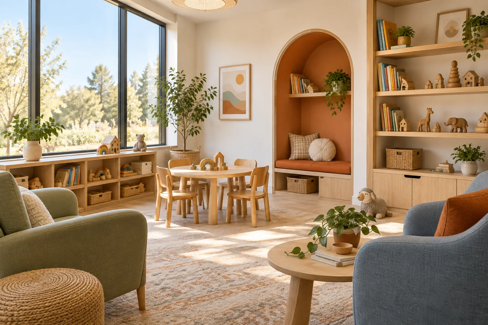
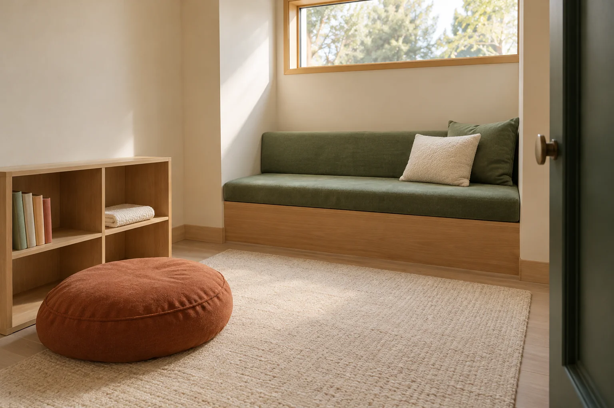

Listen before planning.
Understand strengths, interests, communication and the family’s questions.
Pediatric ABA & autism support
Good care starts with getting to know your child. The things they love. The way they communicate. The little moments that make up your family’s day.
 A LITTLE MORE UNDERSTOOD.
A LITTLE MORE UNDERSTOOD.You don’t have to start
with all the answers.
Start with what ABA involves, how goals are discussed and what to ask a provider. You can take time to compare your options.
A referral starts a review. Learn what intake may need, who handles the information and what must be confirmed before an assessment.
Explore the space, ask about access and routines, and understand which insurance questions need a plan-specific answer.
Referring a family? Visit the professional referral route ↗
How we think about care
The block they reach for. The way they ask for a break. The routine that feels hard at home. Start there.
We start with an assessment that gets to know your child, set goals that matter at home, and keep talking with you as things change. ABA is one way to support new skills; whether it fits your child is a conversation with a clinician.
Explore our care approachUnderstand strengths, interests, communication and the family’s questions.
Discuss what a goal would change in everyday life, and why it matters.
Make space to revisit comfort, participation and the plan itself.
A little look inside
 THE KITEWELL SPACE CONCEPT / 01
THE KITEWELL SPACE CONCEPT / 01A place to arrive, put a bag down and ask where to go. The welcome desk is the starting point for the Kitewell space concept.
“Can we see the entrance and arrival routine before our visit?”

THE KITEWELL SPACE CONCEPT / 02Books, building blocks and room to move. This play-room concept gives everyday interests a place in the conversation.
“How will my child’s interests shape the assessment?”

THE KITEWELL SPACE CONCEPT / 03A quieter corner with fewer things in view. A space concept for pausing, reading or taking a moment away from a busier room.
“How do you respond when my child needs a break?”
THE KITEWELL SPACE CONCEPT / 04An opportunity to share what you notice in daily life. A family conversation can cover what matters, what feels manageable and what still needs explaining.
“Who can I contact if a part of the plan is not working?”
Illustrative Kitewell spaces · AI-generated, not real clinic premises.
Insurance & the practical details
Start with your plan, the service and the location. Then ask what has been confirmed, what is still pending and what costs may apply.
Understand insurance & costsFind your place
Each setting has its own next step, depending on what it can offer right now.
Assessment openings are expected here. Start with a conversation and intake will explain what is still needed.
Riverbend has a waitlist for now. Join it knowing what you are waiting for and when you will hear from us.
For the questions in between
On your mind
A few useful answers before you reach out.
Explore getting startedNo single service is right for every child. Ask a qualified clinician to explain the options, the reasons for a recommendation and how your child’s preferences and your family’s priorities will be included.
Yes. Start with the care information and first-conversation guide. The sample inquiry lets you explore how a question reaches intake, without sending any personal details.
This concept makes comfort and pauses part of the conversation. Ask the actual provider how staff recognize and respond to a child’s communication, distress or wish to pause.
No. Benefits review, any required authorization, clinical fit and appointment availability are separate checks. Ask which steps are complete and which are still pending.
Kitewell is an independent portfolio concept, not an operating clinic. You can explore the full sample inquiry, but it does not book care or send an inquiry.
Your next step
You can take it one conversation at a time.